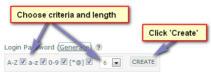

Documentation -


Documentation -

COMMERCIAL VERSION INCLUDES: - FREE upgrades for life - One time payment, NO subscriptions - ALL features unlocked and unlimited
Administrator
When the system is setup you choose a username/password for the main administrative user during the installation procedure. If you ran the manual install option, an administrator is created with the following details:
E-Mail: admin@email.com
Password: admin
You should log in and update these details as soon as possible. Change the e-mail, password & username/alias.
The administrator cannot be deleted from the system and by default has access to ALL areas at ALL times. This is to prevent you from locking
yourself out of the system accidentally.
Name/Alias
This is the users username or full name.
Login E-Mail
Login email address and address ticket notifications are sent to.
Enter New Password
Enter login password. The use of special characters is recommended for more difficult passwords. ie: []()*/
Use the 'Generate' option to help generate a more secure password. When editing, leave blank to keep same password.
For the generate option, click 'Generate'. Select which type of characters you want in the password and click the 'Create' button. This will give you a preview of the password before it
is added to the box. If you don`t like that password, click 'Cancel' to generate another.

Using combinations of all ensures better security.
Department Access
If a user has access to department tickets, they can view all tickets in that department and will be notified when tickets are opened in that department for departments where user assign is not enabled. For departments where manual assign is enabled, the ticket will become visible under the department once assigned.
If a ticket is assigned to a user in a department they don`t have access to, they will still be able to view the ticket as it is assigned to them.
If a user has access to assigned tickets only, they can ONLY view ticket(s) assigned to them, regardless of ticket department. But, when updating a ticket, only departments set to manual assign are shown.
The administrator can always view all tickets regardless of this setting.
Admin Page Access
Specify which admin pages this user has access to. This can restrict user from accessing certain administration content.
WARNING! If user has access to an admin page, he/she has access to all features on that page. Unlike the departments, users are NOT added to all pages by default if none are selected as a security precaution.
Administrator has access to all pages regardless of selections.
Ticket 'From' Name
From name visitor sees in their email program when this user replies to a ticket and notification is sent. Can be the same as name/alias or different.
If left blank, defaults to name/alias.
Ticket 'From' E-Mail Address
From email address visitor sees in their email program when this user replies to a ticket and notification is sent. Can be the same as login email or different.
If left blank, defaults to login email. Note that if the ticket has been opened by imap, the reply address will always be the imap email address and not the admin user address.
Timezone
Preferred timezone. Edit timezones in 'control/timezones.php' if required.
Utilises the PHP5 datetime class, which has better
support for timezones, including daylight saving. Legacy support is included for PHP4, but daylight saving will not function automatically.
If no timezone is set for a user, their timezone will be the same as the default timezone in your settings.
Signature
Enter user signature. This is optional. If entered, automatically appears at the bottom of all replies made by this user. HTML may be used here if required. Line breaks are auto parsed unless disabled in 'control/user-defined/defined2.inc.php'.
Ticket Notepad Access
Do you want user to be able to see and update the notepad area on a ticket page? If disabled, user cannot see or edit notes. System administrator has access by default.
Display Signature in E-Mails
If a user responds to a ticket, do you want their signature (if applicable) to be included in e-mail notifications?
Note that if HTML is included in e-mail signatures you MUST enable the html e-mail option in the following file:
control/user-defined/defined.inc.php
E-Mail Notification
Do you wish to enable e-mail notification for this user if tickets are opened or replied to?
View Assigned Tickets ONLY
If set to yes, user can view only tickets assigned to them, regardless of department filter. As such, user is automatically assigned to all departments.
Delete Privileges
If enabled, user can action delete options on any page they have access to. If disabled, delete options are not available to user. Note that if the privileges are off, access to the System Tools page is auto disabled.
Administrative user has this enabled by default regardless of settings as all admin features are always available.
Send E-Mail Notification to User on Account Creation
If this is checked and you are adding a new user, an email will be sent to the user with their login details. This email can be edited via the following:
templates/language/english/admin-email/new-user.txt
Enable/Disable ALL Notifications
Enables or disables notification for all users.
User Details
View user details, including ticket responses and graph overview.
Internal Messaging System
Users can easily contact other users via the mail icon top right in the admin area.
Help Tips
The same or additional information may be provided by hovering your cursor over the  image next to each heading in the admin area if applicable.
image next to each heading in the admin area if applicable.